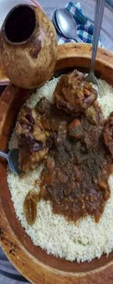
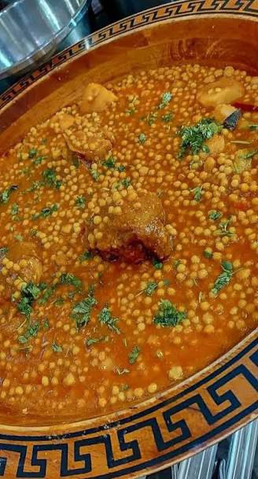
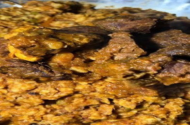
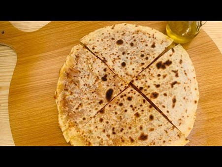
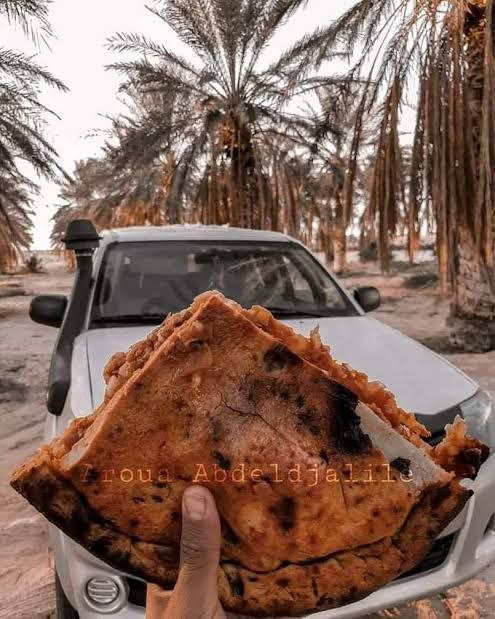
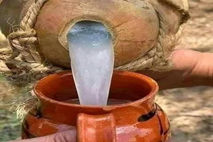
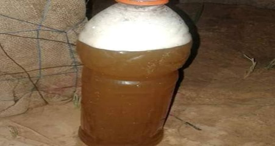

نكهات أصيلة تعبّر عن كرم وأصالة المنطقة

يعتبر الكسكسي السوفي شهر الأطباق التقليدية التي تميز المنطقة، ويُعرف بتنوعه الكبير ونكهاته القوية، وغالباً ما يُستخدم فيه الكسكسي الخشن.

البركوكش السوفي (أو العيش السوفي) هو طبق تقليدي يشتهر به سكان منطقة وادي سوف بالجنوب الشرقي الجزائري، ويتميز بنكهاته الحارة والدافئة التي تناسب المناخ الصحراوي.

المرفوسة (أو المربوزة/الفتفوتة كما تُعرف محلياً) هي أكلة شعبية أصيلة تشتهر بها منطقة وادي سوف في الجنوب الشرقي الجزائري، وتعد من الأطباق الشتوية بامتياز

المطابيق السوفية هي إحدى أشهر الأكلات التقليدية في منطقة وادي سوف بالجنوب الشرقي الجزائري.

الملة او خبزة الملة تعد اكلة شعبية تقليدية اصلية تمتاز بها ولاية الوادي يتم طهيها مباشرة في الرمل الصافي تتميز بطعم لذيذ جدا مقارنة بجميع انواع الخبز الأخرى

للاقمي السوفي هو مشروب تقليدي طبيعي يُستخرج من قلب نخل التمر (الجمار). يشتهر في منطقة وادي سوف بالجزائر كعصير أساسي ومنعش، خاصة خلال فصل الصيف وشهر رمضان.

الوزوازة هي مشروب عشبي تقليدي تشتهر به منطقة وادي سوف بالجزائر، يُعد خصيصاً لمواجهة حرارة الصيف الشديدة وتقليل الشعور بالعطش.